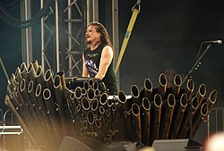
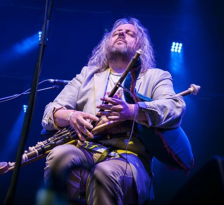
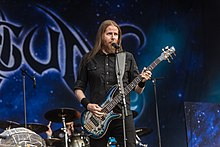

Tuomas Holopainen 
Tuomas Holopainen es el compositor, líder, teclista y escritor de las letras de la banda finesa Nightwish.
Nació el 25 de diciembre de 1976 en Kitee, Finlandia. Empezó a tocar el piano a los 7 años de edad y a los 9 tocaba también el clarinete.
Estudió teoría de la música en una escuela durante 11 años, como también estudió el jazz y los estilos clásicos.
También aprendió a tocar saxofón y se unió a una banda de jazz.
Sin embargo, el teclado ha sido su instrumento preferente desde los 16 años.
Erno Matti Juhani Vuorinen
.jpg)
Erno "Emppu" Matti Juhani Vuorinen (nacido el 24 de junio de 1978 en Kitee, Finlandia), es el guitarrista de las bandas finesas Nightwish y Brother Firetribe.
Empezó a tocar la guitarra a los 12 años y desde entonces ha tocado en bandas como Altaria, Darkwoods My Betrothed y Nightwish, estando en esta última desde sus comienzovirtió en su nuevo proyecto parales. Como el compositor principal de Nightwish es el teclista de la misma, Tuomas Holopainen, Emppu suele tocar riffs extraños para guitarra ya que la mayoría son compuestos con el teclado en mente. Vuorinen también es conocido por su estatura, mide algo menos de 160 cm, y apodado coloquialmente como el "chico bajo".
En el año 2003 Vuorinen es parte de un proyecto homónimo del vocalista de la banda argentina Rata Blanca, Adrián Barilari, (véase Barilari). Vuorinen es parte esencial en la composición y producción del proyecto junto a Jens Johansson (Stratovarius) Sami Vanska (ex-Nightwish) y Jukka Nevalainen (Nightwish).
En enero del 2004, Altaria y Vuorinen acordaron que sería mejor para todos si dejase esa banda, poniendo toda la atención y énfasis en Nightwish. Desde 2006, Brother Firetribe se conlo
Donockley nació en Workington, Cumbria, sus padres eran miembros de una banda llamada Travelling Country.
A la edad de 16 años, Troy se unió a ellos, tocando en varios lugares en West Cumbria.
La colección de discos de su padre era amplia y le otorgó a su hijo el amor por la música clásica, rock, country y tradicional.
Él es un multiinstrumentista y un maestro de las Uilleann pipes.
Su ambición de adolescente era viajar por el mundo como músico.
La excentricidad del sonido de las Uilllean pipes, hicieron que se uniera al grupo de rock progresivo The Enid en 1987.
Troy Donockley 
Donockley nació en Workington, Cumbria, sus padres eran miembros de una banda llamada Travelling Country.
A la edad de 16 años, Troy se unió a ellos, tocando en varios lugares en West Cumbria.
La colección de discos de su padre era amplia y le otorgó a su hijo el amor por la música clásica, rock, country y tradicional.
Él es un multiinstrumentista y un maestro de las Uilleann pipes.
Su ambición de adolescente era viajar por el mundo como músico.
La excentricidad del sonido de las Uilllean pipes, hicieron que se uniera al grupo de rock progresivo The Enid en 1987.
Floor Jansen

Floor Jansen (21 de febrero de 1981, Goirle, Países Bajos) es una cantante neerlandesa. Actualmente vocalista de la banda de metal sinfónico Nightwish.
Jansen se hizo popular como miembro de la banda de metal sinfónico After Forever, desde 1995 hasta su disolución en 2009, cuando After Forever se desintegró, creó ReVamp. En 2012, tras la marcha de su vocalista Anette Olzon, Nightwish llamó a Jansen para finalizar el Imaginaerum World Tour y, en 2013, se anunció como vocalista principal.
Kai Hahto

Kai Hahto (31 de diciembre de 1973 en Vaasa, Finlandia) es un profesor de batería, baterista de la banda de Death Metal Wintersun, de la banda de metal sinfónico Nightwish y miembro fundador de la banda de Grindcore Rotten Sound. Aparte de esto, ha tocado en muchas otras bandas, cuyos estilos varían desde el Black metal al Jazz.
Está patrocinado por Meinl, Pearl, Pearl Eliminator pedals, Balbex drumsticks, Roland V-Drums y Finfonic. En sus inicios, Kai Hahto usaba un kit Kumu.
Jukka Koskinen 
Jukka Koskinen es un bajista finlandés. Ha trabajado con el grupo finlandés de death metal melódico Norther. Ingresó en el grupo Wintersun en el 2005, y desde el 2009 es miembro de Cain's Offering. En abril de 2021 es anunciado como bajista de sesión de la banda finesa Nightwish.
(reemplazando a Marco Hietala por la gira del disco Human. Nature.) para, en agosto de 2022, ser anunciado como miembro oficial de la banda.